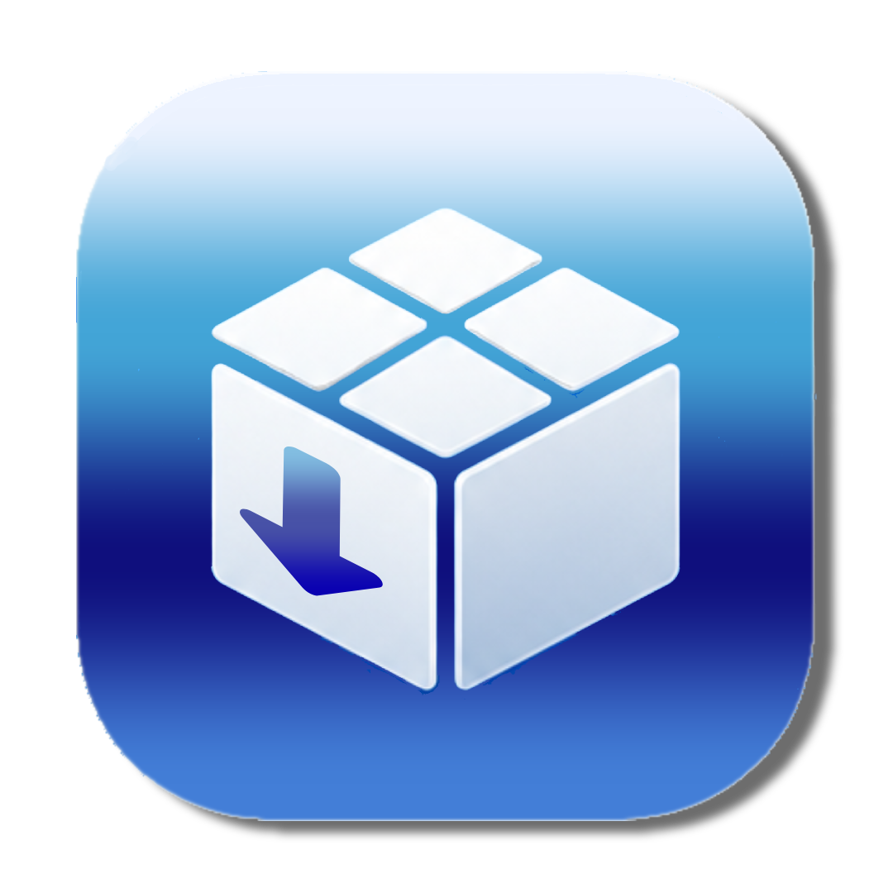

Compatibility Intelligence
Firmware-aware checks across every iOS 6.0 through iOS 9.3.6 release.
Learn more ->
LegacyDock Open Source Legacy iOS HubLegacyDock is the modern operating center for legacy iPhones, iPads, and iPods running iOS 6 through iOS 9.
Open-source. Local-first. Community-driven.
Firmware-aware checks across every iOS 6.0 through iOS 9.3.6 release.
Learn more ->One-click local snapshots and complete preservation report exports.
Learn more ->Scan health, packages, battery, storage, and repository risks.
Learn more ->Spot stale sources, duplicate mirrors, and dependency problems.
Learn more ->Plan SHSH, jailbreak, restore, and ramdisk handoffs before risk.
Learn more ->Device Doctor
Run a full health scan to detect issues, optimize performance, and get trusted recommendations powered by local rules and community research.
Run ScanLegacyDock Care
Unlock compatibility intelligence, cloud sync planning, health history, and community-powered repair recommendations.
Learn More